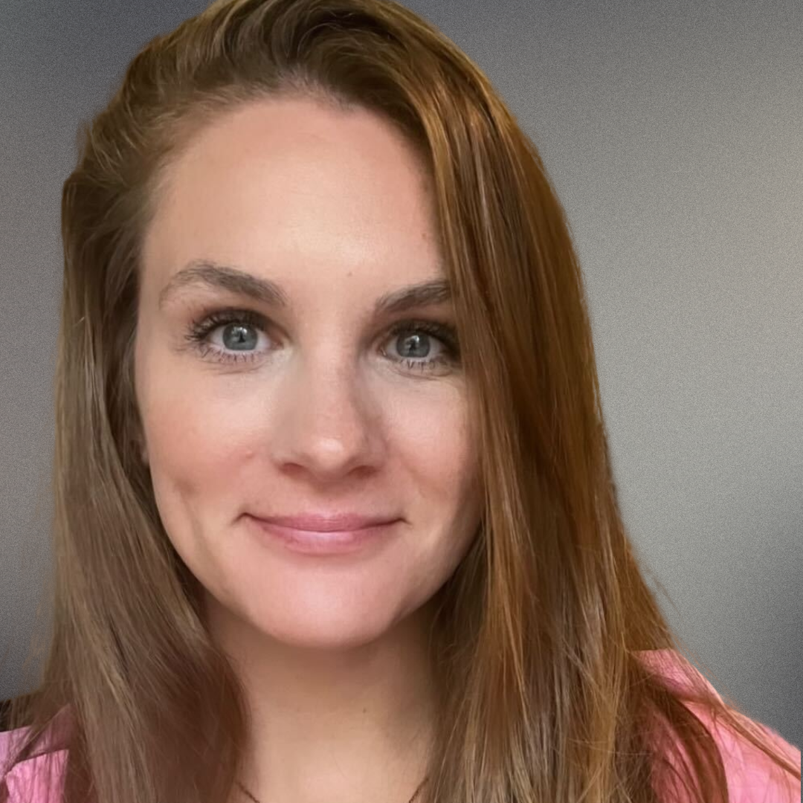

What inspired you to become a technical recruiter?
My path to technical recruiting was unexpected. I had spent the first 13 years of my professional career as a Personal Trainer and Health Coach. Due to the pandemic, in March 2020 my gym was closed, industry was shut down, and I needed to pivot my career. As it turned out, my skills from coaching over 400 people from my training career translated exceptionally well to recruiting. I soon fell in love with helping people find companies, roles, and opportunities that positively impacted their lives in a different way. I continue to be inspired to pair up people and companies that can impact the world collaboratively in a positive way.

What are some of the biggest challenges you face in your role, and how do you overcome them?
One of the biggest challenges you face as a recruiter are candidates’ previous experiences with recruiting relationships. There are many preconceived notions and past experiences which impact initial touch points for future recruitment reach out.
I specialize in building rapport and authentic professional connections with candidates and do not lead with “what can you do for us” but “what can we do for you?” I set the foundation of trust, openness, and care so that each potential candidate I connect with knows and feels that I respect their time and have their best interest at heart.
How does your Veteran background influence your approach to recruitment?
Being in the military for 12 years, I have worked with a multitude of different people from different backgrounds, cultures, and beliefs. In addition to working together, we also often have mission requirements as a team almost immediately after meeting each other.
This has exponentially increased my communication, leadership, and collaboration skills. I believe I have the ability to communicate effectively, respectfully, and purposefully with anyone I have the opportunity to connect with. It also has allowed me to be extremely resilient. Not every recruiting reach out and effort results in a win. Sometimes there’s a lot of failure before success. Resiliency is truly ingrained into you in all aspects of military life. I value my experience in the military as I see how much it has allowed for growth in my civilian life as well.
Going through the interview process with a candidate I believe is a great match really feels like “We’re in this together!” which reminds me a lot of my military world.
How do you work with CivicActions stakeholders to understand their specific needs and requirements for a role?
We have a very thorough process that is conducted before a new role is even open or posted. This involves multiple collaborative meetings with hiring managers and the hiring team as whole along with the Talent Acquisition team so that we have a crystal clear understanding of who the theoretical perfect candidate is.
Aside from initial job description and needs discussions, we are constantly paying attention to feedback during the interview process. If there are any consistent signs that the current candidate pool is not the correct match for the role they are identified early on so that recruitment efforts can be refined immediately. The same goes for the candidates who have stood out so that we are able to further recruit those specific attributes.
Our power at CivicActions lies within our continuous collaboration and communication to ensure that the quality of our talent is in line, if not exceeding, the expectations of the role and project.
How do you approach identifying and evaluating talented candidates for a role?
After gathering all the in-depth information on the requirements for the role we utilize recruiting resources for cold outreach and job posting amongst various channels and boards. We take DEIA into consideration for all of our roles and make it a priority to ensure that we are having an equitable interview process.
Evaluating candidates starts with our initial screening which allows recruiters to confirm details, share more about the company, and learn more about why the candidate is interested and open to new opportunities. We don’t just look for candidates who are a match on paper, but also candidates who are a match on being mission driven, wanting to make an impact, and are in line with our company values. Essentially we look for the best of the best, and that’s why we have them.
We then have candidates complete a rigorous interview process to evaluate any technical skills needed, evaluate their past experience, and allow for them to meet the team they will be working alongside.
What do you enjoy most about your job and working at CivicActions?
CivicActions is the type of environment where you will never wonder if you are making a difference or if you are genuinely cared for and appreciated. To work somewhere where your input is always taken into consideration and leadership actually listens to employee feedback and then implements immediate change is something so valuable it’s hard to put into words.
I truly enjoy bringing new candidates into our company because even though I know this is the best job they will ever have, they don’t know that yet. So seeing them realize that all the incredible things I told them during the interview process are true and real — that’s priceless as well. I love knowing that I have been part of giving someone the opportunity to work somewhere that will only positively impact their life.